第 6 讲：光栅化（二）——反走样与深度缓冲
从采样理论解释锯齿的成因，并给出反走样（MSAA）与可见性（Z-Buffer）的工程解法
◆ 学完这一讲，你应该能
能说清光栅化本质是二维空间上的采样，锯齿是采样不足（欠采样）造成的走样
能用频域直觉解释为什么“先滤波再采样”能反走样，而“先采样再滤波”不行
能写出 MSAA 的步骤：每像素取 N×N 个子样本、对覆盖测试结果求平均
能解释 Z-Buffer 如何用逐像素深度比较解决遮挡问题，并知道它和画家算法的区别
能在 UE/Unity 里找到对应的抗锯齿与深度测试设置，并知道 MSAA、FXAA、TAA、DLSS 的大致取舍
核心结论速记
光栅化 = 在像素中心做点采样，采样不足就会产生锯齿（jaggies）等走样现象
走样的根源是信号变化太快（高频）而采样太慢，高频被“折叠”成低频假象（aliasing）
反走样的正确顺序是“先滤波（模糊/去高频）再采样”，先采样再模糊只会得到模糊的锯齿
频域视角：采样 = 在频域复制频谱；滤波 = 把频谱变窄，避免复制时重叠
MSAA 用像素内多个子样本近似一个像素宽的盒式滤波，代价是显存与带宽，不是免费的
Z-Buffer 为每个像素记录最近深度，逐三角形逐像素做深度测试，天然处理任意绘制顺序
现代抗锯齿是折中：FXAA 后处理、TAA 时域累积、DLSS 超分，本质仍是“样本不够”的问题
011. 从“像素中心测试”到锯齿：光栅化就是采样
上一讲我们学会了把三角形光栅化：对每个像素中心做“点是否在三角形内”的测试（point-in-triangle test），在内部就涂成三角形颜色，否则保留背景。这一讲先把这个过程换一个视角看——光栅化本质上是在二维空间上做采样。
想象一个连续定义的三角形函数 \( f(x,y) \)：在三角形内部取 1，外部取 0。真实世界（数学世界）里这个函数是连续的，边界是光滑的。但屏幕上的像素是均匀着色的小方块，我们只在每个像素中心取一个样本，然后把这个样本值铺满整个像素。于是光滑的斜边被量化成一格一格的阶梯——这就是锯齿（jaggies）。
课件用“连续三角形函数 vs 光栅化结果”的对比图强调：不是三角形画错了，而是我们用太少的样本去表示一个连续信号。这正是采样理论要解决的问题：什么样的信号可以被采样后无失真地重建？采样率不够时会发生什么？
需要先建立一个重要观念：采样在图形学里无处不在。光栅化是采样二维位置，照片是采样图像传感器平面，视频是采样时间。只要有采样，就可能出现采样瑕疵（sampling artifacts）。本讲后面会看到，锯齿、摩尔纹、车轮倒转 illusion，本质是同一件事。
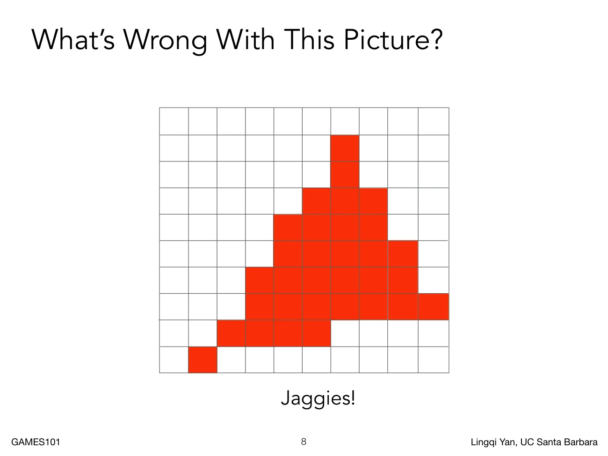
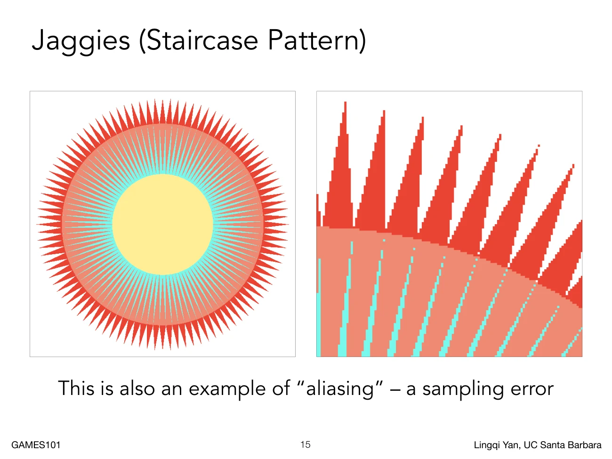
补充说明
本讲不涉及着色模型，只讨论“像素该不该涂、涂什么颜色”的采样与可见性问题。
常见坑
把锯齿当成“分辨率不够”就完事 → 提高分辨率只是增加采样率，成本高且不解决本质 → 应先理解采样与滤波，再选反走样方案
像素中心坐标算错（例如用整数像素坐标而非 +0.5 的中心）→ 三角形边界整体偏移半个像素 → 检查光栅化循环里是否用了 (x+0.5, y+0.5)
UE / Unity 落地
UE：项目设置里 Anti-Aliasing Method 可选 None/FXAA/TAA/TSR/MSAA，默认 TAA；关闭后能直接看到锯齿，便于对照本讲现象
Unity：URP/HDRP 的 Camera 或 Render Pipeline Asset 里有 Anti-aliasing 选项（FXAA/SMAA/TAA），MSAA 在 Quality 设置里按平台开启
022. 走样家族：锯齿、摩尔纹与车轮倒转
课件把各种采样瑕疵放在一起，是为了让你看到它们的共同结构：
- 锯齿（Jaggies）：空间上采样不足，斜边变成阶梯。
- 摩尔纹（Moiré Patterns）：图像本身有高频细节（例如细密条纹），采样网格与之干涉，产生大尺度花纹。课件里“隔行隔列抽样”的例子就是典型的欠采样图像。
- 车轮倒转（Wagon Wheel Illusion / False Motion）：时间上采样不足（帧率低于轮辐转动频率），高速旋转看起来变慢甚至倒转。
课件给出的总结非常关键：这些瑕疵背后都是“信号变化太快（高频），但采样太慢”。用信号处理的术语说，采样率低于信号最高频率的两倍（奈奎斯特频率），高频就会“伪装”成低频，这种现象叫走样（aliasing）。
这里要建立一个直觉：走样不是随机噪声，而是确定性的错误——同样的几何、同样的采样网格，每次都会得到同样的阶梯。这也意味着它可以用确定性的方法（滤波、增加样本）来缓解。
注意“走样”这个词在中文里容易被误解为“画得不对”，其实它指的是频率混叠：两个不同频率的信号在给定采样率下变得无法区分，它们互为 alias（别名）。
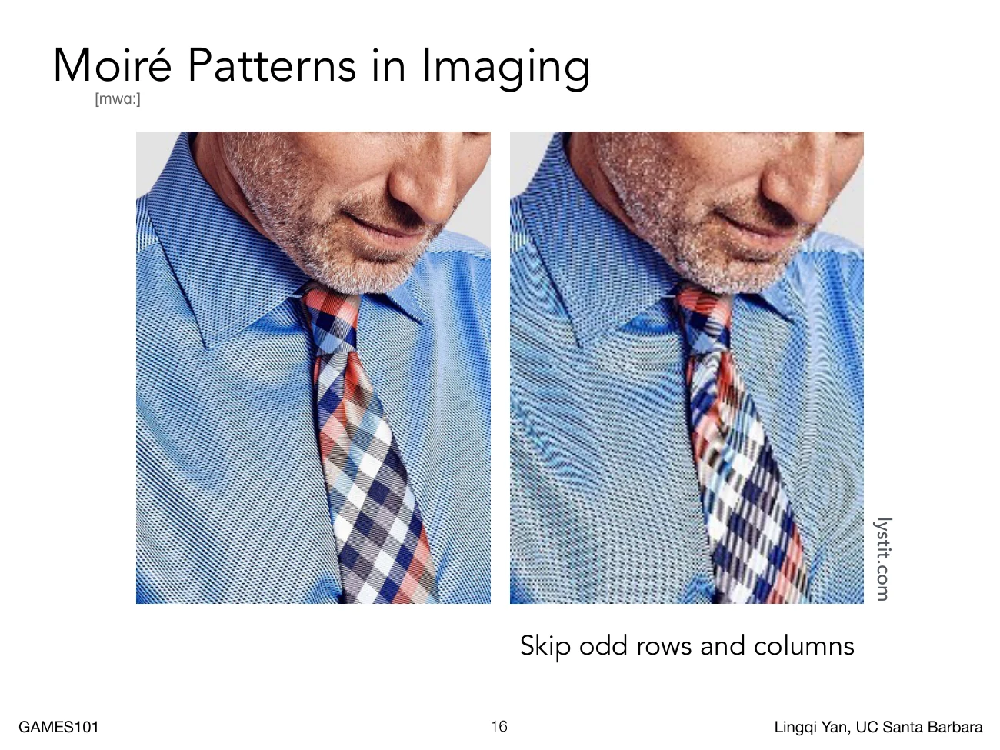
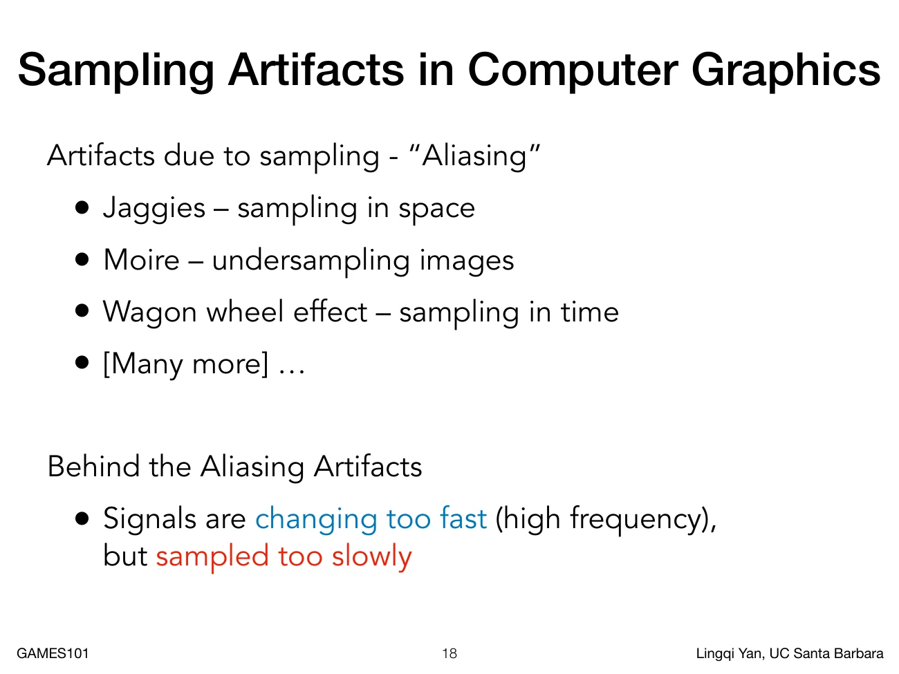
补充说明
奈奎斯特频率：能无失真重建信号的采样率至少是信号最高频率的两倍。课件没有展开公式，但这是后面所有推导的基石。
常见坑
把摩尔纹当成纹理本身画错了 → 实际是采样率与纹理频率干涉 → 检查是否关闭了 mipmap 或各向异性过滤
视频里车轮倒转被当成“物理 bug” → 实际是时间采样不足 → 提高帧率或接受它（电影里常见）
UE / Unity 落地
UE/Unity 的纹理设置里都有 mipmap 与各向异性过滤（Anisotropic Filtering），它们就是预先滤波，专门压制远处纹理的摩尔纹
UE 的 TSR/TAA 在时域上累积多帧样本，能显著缓解高频几何边缘的闪烁（时间走样）
033. 反走样的核心思想：先模糊，再采样
既然走样是“高频没被采样住”，最直接的想法是：在采样之前把高频去掉。课件用一句话概括：Antialiasing idea: blurring (pre-filtering) before sampling。
对比两种做法：
- 点采样（point sampling）：每个像素只取中心一个样本，结果非红即白，边缘是硬阶梯。
- 反走样采样（antialiased sampling）：先对连续信号做预滤波（去掉高于奈奎斯特频率的成分），再采样。结果边缘像素取中间值（例如粉色），视觉上过渡自然。
课件特别强调了一个顺序问题：
- 先滤波再采样（filter then sample）：正确。
- 先采样再滤波（sample then filter）：错误。这样只会把已经产生的锯齿模糊掉，得到“模糊的锯齿”，并没有真正消除走样。
为什么？因为采样一旦发生，高频已经折叠进低频，信息已经丢失，再滤波也救不回来。这就像拍照时已经拍糊了，后期再锐化也恢复不了细节。
那么“滤波”具体怎么做？课件给出一个非常实用的答案：用一个像素宽度的盒式滤波器（box filter）做平均。也就是说，像素的颜色不应该只取中心点，而应该取该像素覆盖区域内三角形面积的平均值。这个平均值恰好等于“像素被三角形覆盖的面积比例”，于是边缘像素自然得到 0 到 1 之间的覆盖率，颜色就是前景与背景的加权混合。
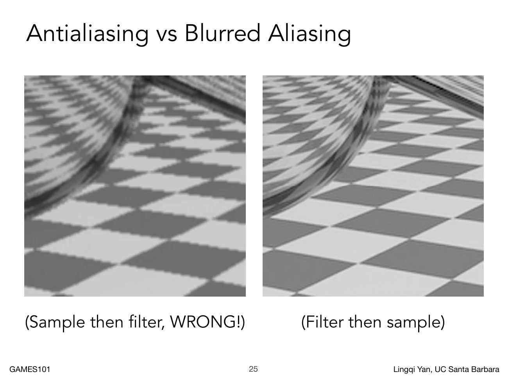
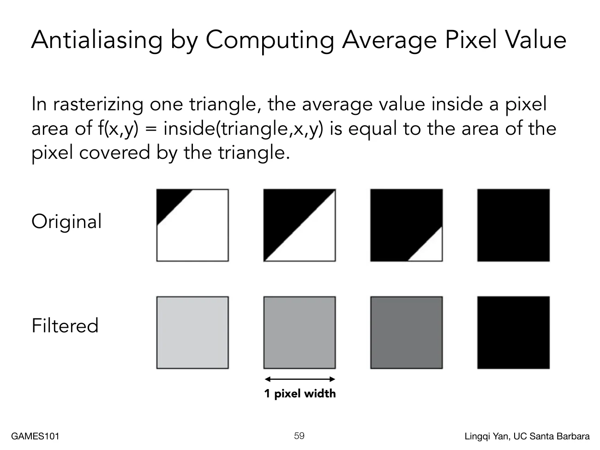
补充说明
“覆盖率 = 面积比例”只对盒式滤波成立；换成高斯核时，像素值是邻域加权平均，不再等于单个像素的覆盖率。
常见坑
在光栅化之后对整张图做高斯模糊来“抗锯齿” → 这是先采样再滤波，边缘变糊但阶梯仍在 → 应在采样阶段用覆盖率/多子样本
把“滤波”理解成“把图像变模糊” → 滤波的目的是去除高于奈奎斯特频率的成分，不是无差别模糊 → 选择合适宽度的核
UE / Unity 落地
UE 的 Post Process Volume 里没有“抗锯齿模糊”这种正确做法；正确入口是 Anti-Aliasing Method，不要用 Bloom/Blur 冒充
Unity URP 的 MSAA 在 Render Pipeline Asset 中设置，属于采样阶段的多重采样，而不是后处理模糊
044. 频域直觉：采样是复制频谱，滤波是把频谱变窄
课件用傅里叶（Fourier）工具把上面的直觉讲严格。核心结论有三条：
（1）任何信号都可以分解为不同频率的正弦/余弦波之和。 图像也一样：平坦区域是低频，边缘和细节是高频。
（2）采样 = 在频域里复制频谱。 在空间域按间隔采样，等价于在频域把原始频谱以采样频率为周期不断复制。如果原始信号含有高于采样频率一半的成分，复制出来的频谱就会重叠，重叠部分无法再分离——这就是走样的频域图像。
（3）滤波 = 去掉某些频率成分。 低通滤波（low-pass filter）保留低频、去掉高频，效果是模糊；高通滤波（high-pass filter）保留高频、去掉低频，效果是提取边缘。盒式滤波（box filter）就是一个低通滤波器；核越宽，保留的频率越低、图像越模糊。
把这三条串起来，反走样就有了严格的解释：在采样（复制频谱）之前，先用低通滤波把频谱变窄，使复制出来的副本不重叠。课件把它总结为 “Antialiasing = Limiting, then repeating”（先限带，再复制）。
还有一个重要推论：增加采样率也能让副本间距变大、避免重叠，这就是“提高分辨率”能减轻锯齿的原因；但代价高，而且可能仍不够。所以工业上两条路都走：提高采样率（超采样/超分）和预滤波（MSAA/后处理 AA）。
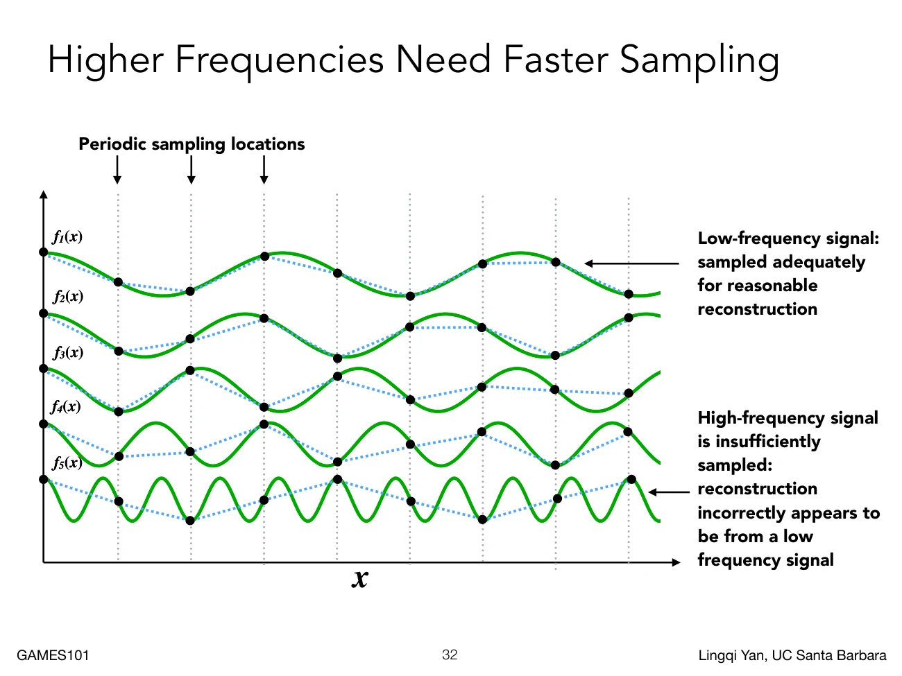
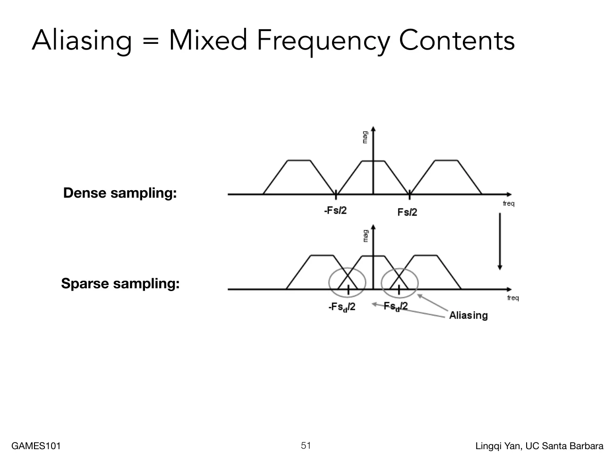
补充说明
课件没有要求手推傅里叶变换公式，重点是建立“时域卷积 = 频域相乘”“采样 = 频域复制”这两个直觉。
常见坑
把“高频”理解成“亮度高” → 高频指变化快，不是数值大 → 边缘、细纹理才是高频
认为滤波核越大越好 → 核越宽低通越强，图像越糊，可能丢失本可保留的细节 → 核宽度应与采样率匹配
UE / Unity 落地
UE 的纹理 mipmap 生成就是逐级低通滤波，远处使用低级别 mip 等价于“先限带再采样”，避免摩尔纹
Unity 的 Texture Import 设置里 Mip Maps 与 Filter Mode（Point/Bilinear/Trilinear）直接对应采样与滤波策略
055. MSAA：用多个子样本近似盒式滤波
理论上，反走样要求我们计算“像素区域内三角形覆盖的面积比例”。精确求面积对任意三角形很麻烦，工业界的做法是超采样（supersampling）：在一个像素内取多个样本，然后平均。
课件给出的 MSAA（Multisample Anti-Aliasing）步骤：
- 在每个像素内取 \( N \times N \) 个子样本位置（例如 4×4 = 16 个）。
- 对每个子样本做“是否在三角形内”的测试。
- 把 \( N \times N \) 个结果求平均，得到该像素的颜色（覆盖率）。
这等价于用 \( N \times N \) 个子样本近似一个像素宽的盒式滤波。课件展示 4×4 超采样后，边缘像素出现多级灰度/粉色过渡，锯齿明显缓解。
代价：每个像素要存多个子样本（颜色、深度），显存和带宽成倍增加；计算量也增加。所以 MSAA 通常只开 2×/4×/8×，而不是无限提高。
一个常被忽略的细节：MSAA 的“多重采样”通常只在几何边缘上真正产生多个样本，三角形内部仍然共享一个颜色（因为内部所有子样本覆盖测试结果相同）。这正是它比“渲染到 4 倍分辨率再缩小”（SSAA）便宜的原因。
课件最后提醒：No free lunch。MSAA 不是魔法，它只是用更多样本换更少的走样。
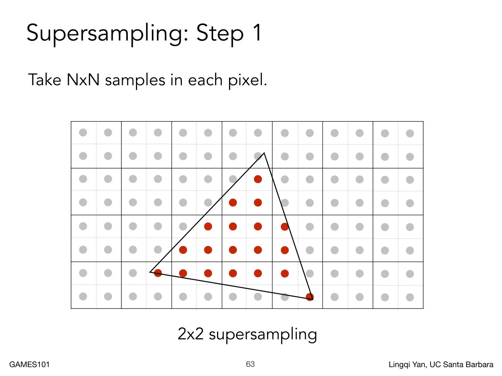
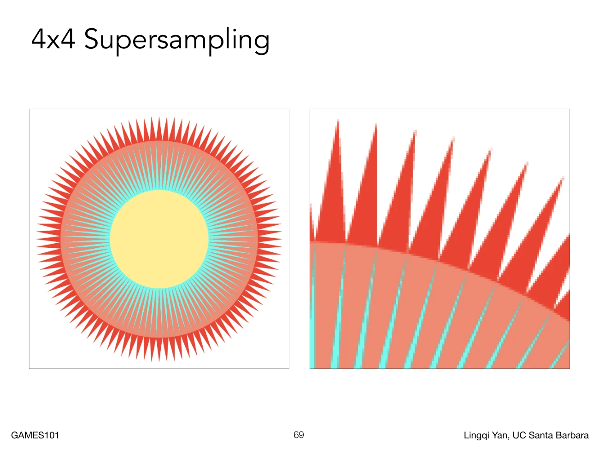
补充说明
课件标题写的是 MSAA，但描述的是“每像素 N×N 样本再平均”，更接近 SSAA 的教学简化版；工程上的 MSAA 只对几何边缘多重采样，内部共享着色结果。
常见坑
以为开了 MSAA 所有锯齿都会消失 → MSAA 主要解决几何边缘走样，对着色走样（高光闪烁）和纹理摩尔纹帮助有限 → 后者要靠 TAA/mipmap
MSAA 与延迟渲染（Deferred）不兼容却强行开启 → 部分管线会静默失效或回退 → 检查渲染路径与 AA 设置的兼容性
UE / Unity 落地
UE：MSAA 只在 Forward Shading 下可用，Deferred 默认用 TAA；项目设置 Anti-Aliasing Method 里选 MSAA 并设置 Sample Count
Unity URP：MSAA 在 Render Pipeline Asset 的 Quality 里设置，Deferred 渲染器对 MSAA 支持有限，通常配合 FXAA/TAA
MSAA 覆盖率计算的伪代码（每像素 N×N 子样本）（cpp）
float coverage = 0.0f;
for (int sy = 0; sy < N; ++sy)
for (int sx = 0; sx < N; ++sx) {
float px = x + (sx + 0.5f) / N; // 子样本位置
float py = y + (sy + 0.5f) / N;
if (insideTriangle(px, py, v0, v1, v2))
coverage += 1.0f / (N * N);
}
// 最终颜色 = coverage * 三角形颜色 + (1-coverage) * 背景色
066. 现代抗锯齿版图：FXAA、TAA 与 DLSS
课件最后用一页“Antialiasing Today”把工业界的方案串起来，并再次强调 No free lunch：
- FXAA（Fast Approximate AA）：后处理阶段检测图像中的边缘并做模糊。速度极快，但会糊掉细节，属于“先采样再滤波”的近似补救。
- TAA（Temporal AA）：利用时间维度，把相邻多帧的样本累积起来，相当于在时间上超采样。效果远好于单帧 MSAA，但会引入拖影（ghosting）和闪烁，需要运动向量（motion vector）与历史帧校正。
- 超分辨率 / 超采样（Super resolution / Super sampling）：从低分辨率重建高分辨率，本质仍是“样本不够”的问题。
- DLSS（Deep Learning Super Sampling）：用神经网络做超分与抗锯齿，输入低分辨率帧 + 运动向量 + 历史帧，输出高分辨率帧。
这一页的用意不是让你实现它们，而是让你建立方案选型的地图：
- 要几何边缘干净、且用前向渲染 → MSAA。
- 要综合效果好、能接受轻微拖影 → TAA/TSR。
- 要极致性能、能接受模糊 → FXAA。
- 要低分辨率跑高画质 → DLSS/FSR/XeSS。
所有这些方法都在和同一个敌人作战：采样率不够。理解这一点，你就不会被各种缩写迷惑。
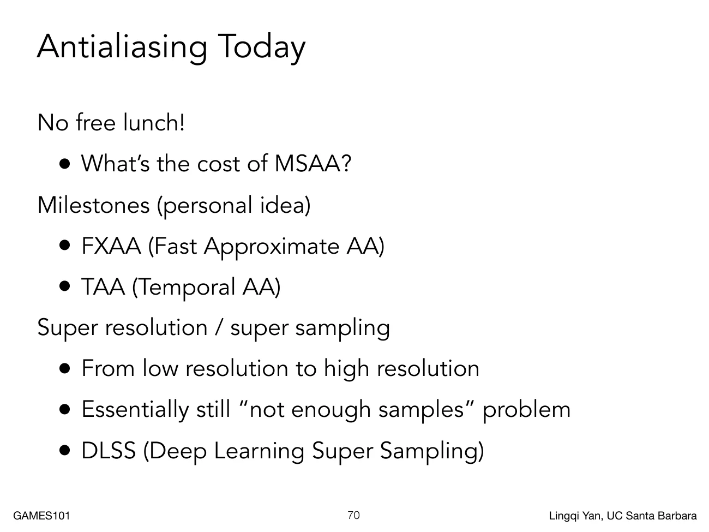
补充说明
本讲只做方案概览，不展开 TAA 的时域累积公式与 DLSS 的网络结构。
常见坑
把 DLSS 当成“免费画质提升” → 它依赖运动向量与历史帧，快速运动/透明物体处会出错 → 检查运动向量是否正确输出
TAA 拖影严重时去关掉 TAA → 先检查运动向量、历史帧裁剪（neighborhood clamping）与材质是否写入速度缓冲
UE / Unity 落地
UE：默认 TAA，可换 TSR（Temporal Super Resolution）；项目设置里 Anti-Aliasing Method 切换，DLSS/FSR 通过插件启用
Unity：URP/HDRP 提供 TAA、FXAA、SMAA；DLSS 通过 NVIDIA 插件，FSR 通过 AMD 插件
引擎对照表
| 概念 / 效果 | Unreal Engine | Unity |
|---|---|---|
几何边缘抗锯齿 | 项目设置 Anti-Aliasing Method = MSAA（仅 Forward） | URP Asset 的 MSAA 或 Quality 设置 |
时域抗锯齿 | TAA / TSR（默认） | URP/HDRP 的 TAA |
后处理快速抗锯齿 | FXAA | FXAA / SMAA |
超分辨率 | DLSS / FSR 插件 | DLSS / FSR 插件 |
纹理摩尔纹抑制 | Texture 的 Mip Gen Settings 与各向异性过滤 | Texture Import 的 Mip Maps 与 Aniso Level |
深度测试/遮挡 | 材质 Depth Test、自定义深度（Custom Depth） | Shader 的 ZTest / ZWrite，Camera Depth Texture |
术语双语表
| English | 中文 | 说明 |
|---|---|---|
| Sampling | 采样 | 在连续信号上按固定间隔取离散样本的过程 |
| Aliasing | 走样/混叠 | 采样率不足导致高频伪装成低频的现象 |
| Jaggies | 锯齿 | 空间采样不足在几何边缘形成的阶梯 |
| Moiré Pattern | 摩尔纹 | 高频纹理与采样网格干涉产生的大尺度花纹 |
| Nyquist Frequency | 奈奎斯特频率 | 无失真采样要求采样率至少为信号最高频率的两倍 |
| Pre-filtering | 预滤波 | 采样前先低通滤波，去掉高于奈奎斯特频率的成分 |
| Box Filter | 盒式滤波器 | 在核窗口内做等权平均的低通滤波器 |
| MSAA | 多重采样抗锯齿 | 每像素多个子样本近似盒式滤波，主要作用于几何边缘 |
| TAA | 时域抗锯齿 | 跨帧累积样本，用时间换空间采样率 |
| Z-Buffer | 深度缓冲 | 逐像素记录最近深度，用于解决遮挡 |
课后练习
01 为什么“先采样再滤波”不能真正反走样？请用频域语言解释。
查看答案
提示：
想想采样在频域做了什么，滤波又做了什么。
采样会在频域把原始频谱以采样频率为周期复制；如果原始信号含高于奈奎斯特频率的成分，复制出的副本会重叠，高频已经折叠进低频，信息不可逆地丢失。此后再滤波只能去掉某些频率，无法把已经混叠的成分分开，因此得到的是“模糊的锯齿”而不是干净边缘。正确顺序是先低通滤波把频谱变窄，再采样使副本不重叠。
02 一个像素用 4×4 超采样，三角形覆盖了其中 6 个子样本。若三角形颜色为红色 (1,0,0)，背景为白色 (1,1,1)，求该像素最终颜色。
查看答案
提示：
覆盖率 = 覆盖子样本数 / 总子样本数。
覆盖率 = 6/16 = 0.375。颜色 = 0.375×(1,0,0) + 0.625×(1,1,1) = (1, 0.625, 0.625)，即偏粉的红色。
03 MSAA 与 SSAA（超采样抗锯齿）在工程实现上的主要区别是什么？为什么 MSAA 更便宜？
查看答案
提示：
想想三角形内部与边缘的子样本覆盖测试结果是否相同。
SSAA 以更高分辨率渲染整帧再缩小，每个子样本都要完整着色；MSAA 只在几何边缘处真正保留多个子样本，三角形内部所有子样本覆盖测试结果相同，可以共享一次着色结果，因此着色开销远低于 SSAA，但仍需更多显存/带宽存子样本。
04 在 UE 里你发现画面边缘有锯齿，但项目用的是默认 Deferred 渲染。你会优先尝试哪种抗锯齿方案？如果开启 MSAA 会怎样？
查看答案
提示：
回忆 MSAA 与延迟渲染的兼容性。
Deferred 渲染下 MSAA 支持有限或不可用，应优先使用 TAA/TSR（默认）或 FXAA。若强行在 Deferred 下开 MSAA，可能静默失效或回退到其他 AA，需要检查渲染路径与项目设置的兼容性；若确实需要 MSAA，可切换到 Forward Shading。
05 解释为什么提高分辨率能减轻锯齿，但它和 MSAA 解决的是同一个问题的两种不同手段。
查看答案
提示：
从频域副本间距与预滤波两个角度说。
提高分辨率等价于提高采样率，在频域上使复制出的频谱副本间距变大，减少重叠，从而减轻走样；MSAA 是在采样前用多个子样本近似低通滤波，把频谱变窄，避免复制时重叠。两者一个“拉开副本”，一个“收窄频谱”，目标都是避免频域重叠，所以是同一问题的两种手段，且都有成本（分辨率受硬件限制，MSAA 受显存带宽限制）。